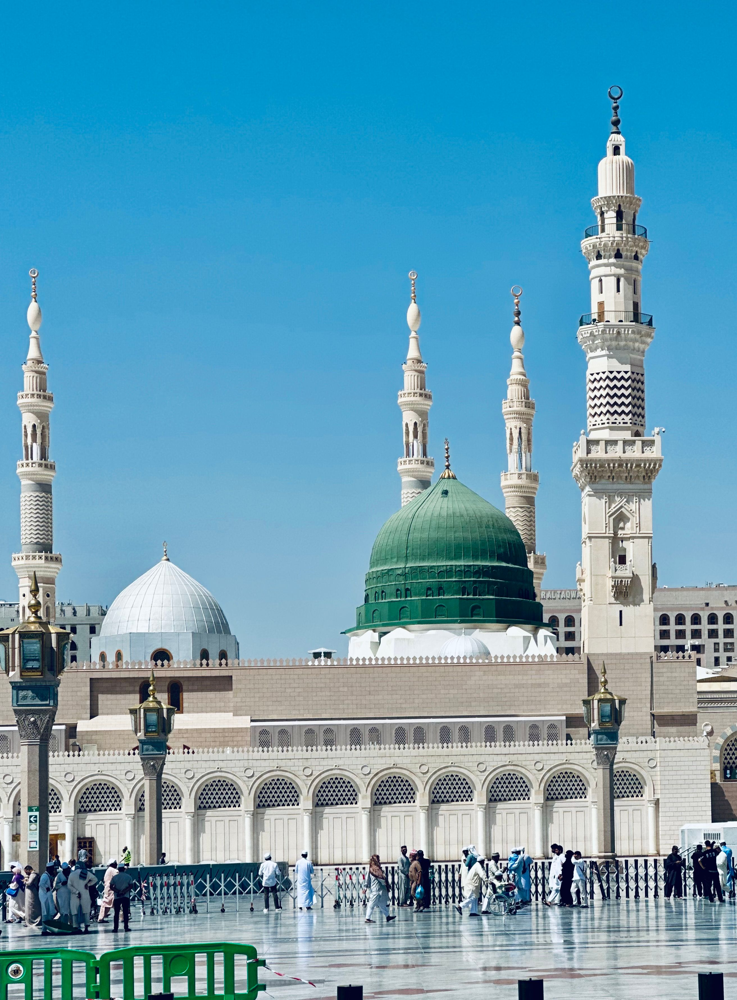
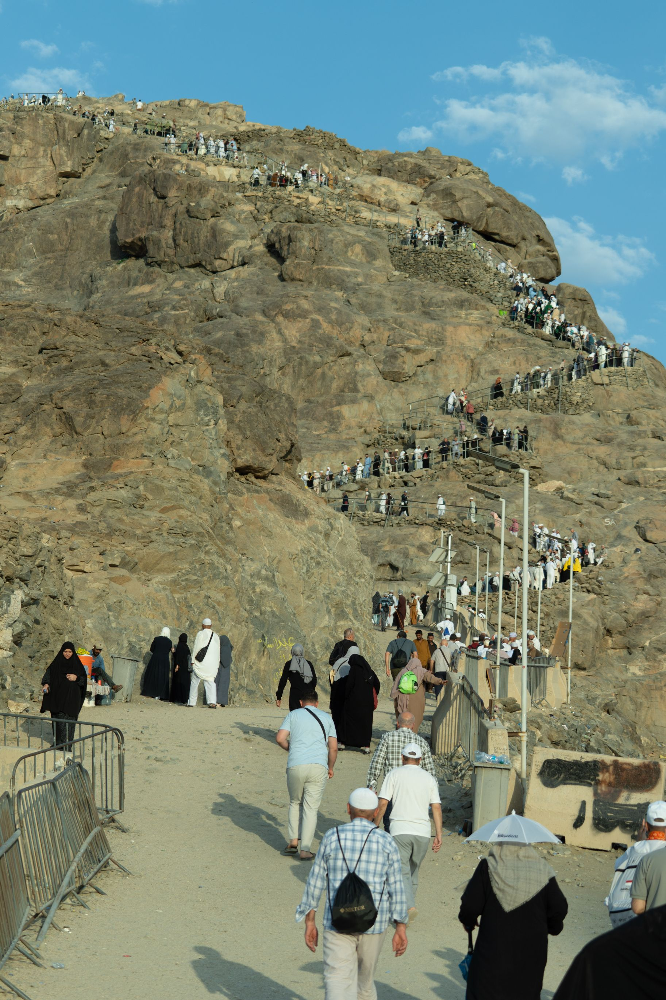
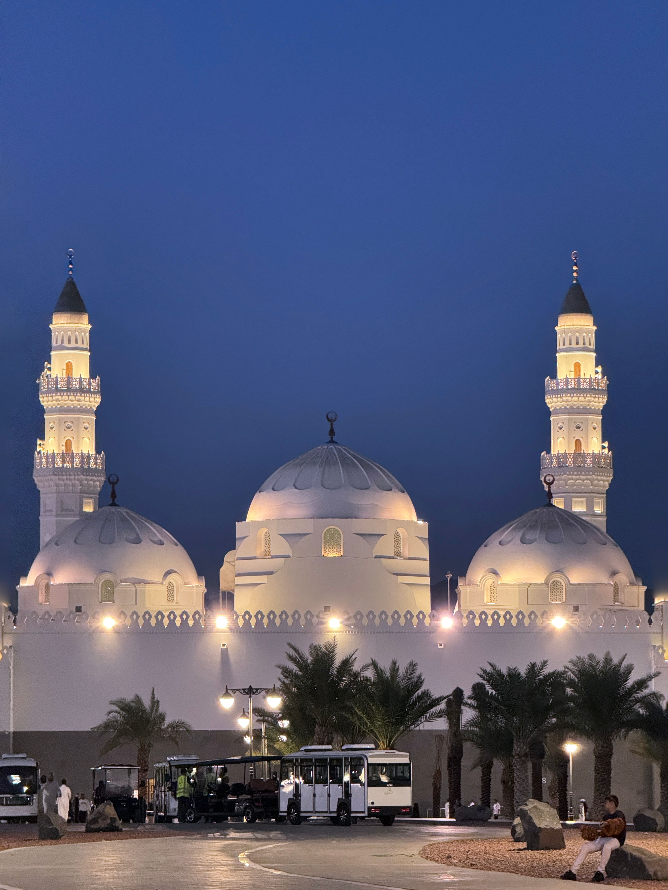
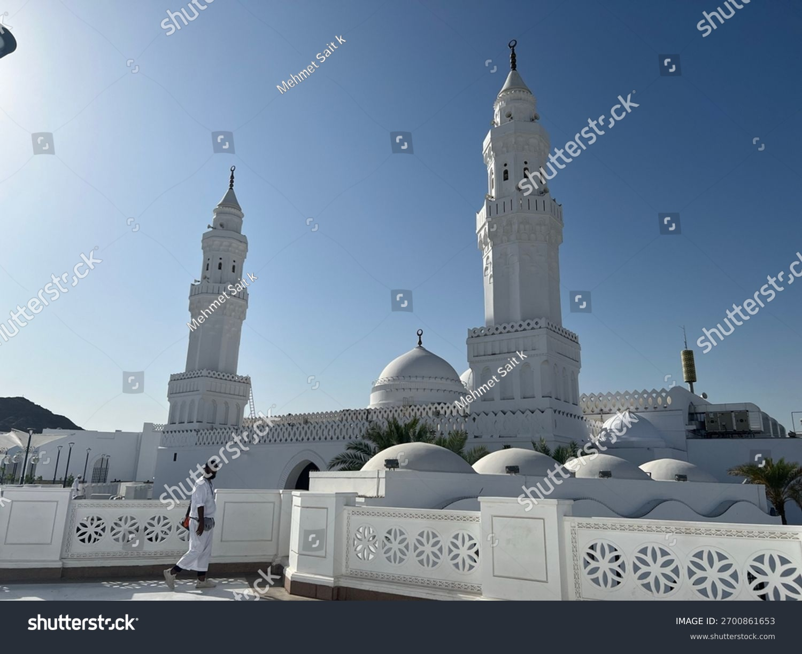
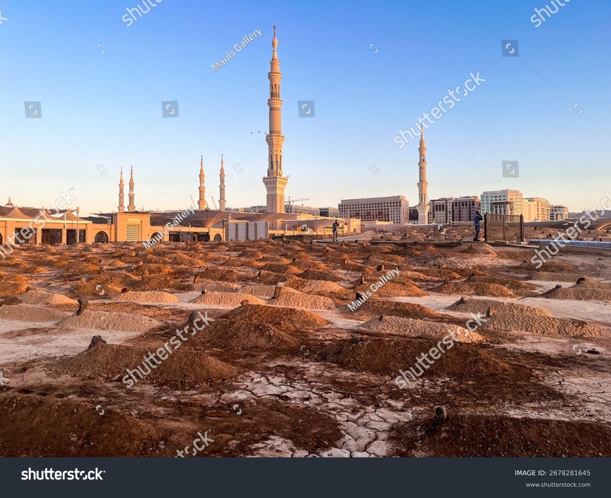
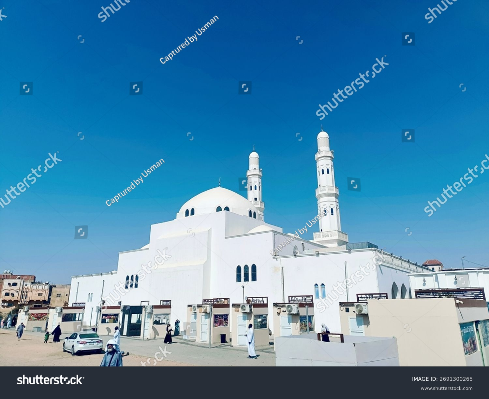
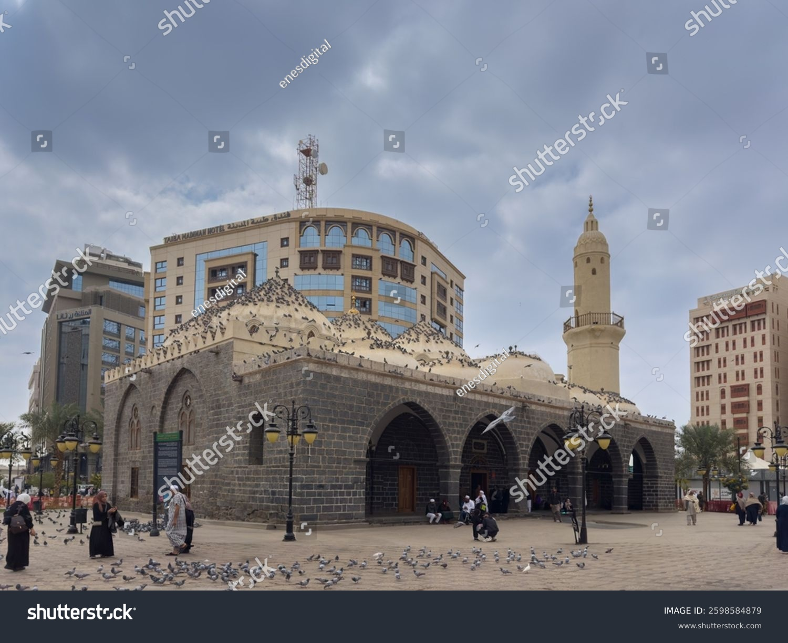
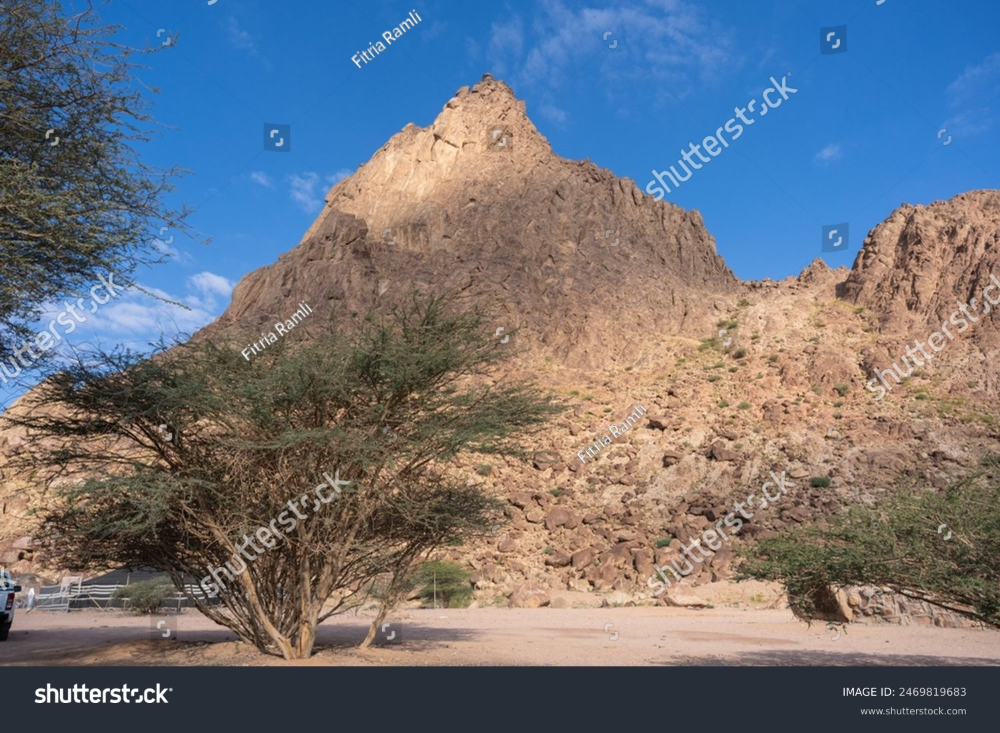

Sejarah
Hijrah Nabi Muhammad saw. dari Mekah ke Yathrib pada tahun 622 M
menjadi titik balik penting dalam sejarah kota ini. Kedatangan beliau
disambut dengan penuh antusias oleh penduduk Yathrib, yang kemudian
mengganti nama kota tersebut menjadi Al-Madinah Al-Munawwarah sebagai
bentuk penghormatan. Di bawah kepemimpinan Nabi Muhammad saw., Madinah
berkembang menjadi pusat peradaban Islam yang disegani. Kota ini
menjadi basis penyebaran ajaran Islam ke seluruh jazirah Arab dan
dunia. Nabi Muhammad saw. juga menjadikan Madinah sebagai tempat untuk
membangun strategi politik dan militer yang mengukuhkan posisi Islam
sebagai kekuatan baru di kawasan tersebut.
Seiring berjalannya waktu, Madinah terus berkembang menjadi salah satu
kota paling penting di dunia Islam. Saat ini, Madinah telah
bertransformasi menjadi kota modern dengan infrastruktur yang canggih,
namun tetap mempertahankan nilai-nilai sejarah dan keagamaannya.
Masjid Nabawi, yang menjadi ikon utama kota ini telah mengalami
berbagai renovasi dan perluasan untuk menampung jutaan jamaah setiap
tahunnya. Dari sisi ekonomi, Madinah juga berkembang sebagai kota
perdagangan dan pariwisata religi. Pasar-pasar tradisional seperti
pasar kurma dan pusat-pusat perbelanjaan modern menawarkan berbagai
produk khas yang menarik bagi para wisatawan.
Letak Geografis
Secara geografis, Kota Madinah terletak di bagian barat Arab Saudi.
Daerahnya berada di sekitaran wilayah Hejaz, berjarak 100 mil dari
Laut Merah dan 275 mil dari kota Mekah. Madinah ini ada di ketinggian
625 meter di atas permukaan laut (mdpl) dan mempunyai daerah oasis
yang terbilang subur. Bagian timurnya terdapat batas berupa medan lava
luas yang dikatakan berasal dari letusan gunung berapi tahun 1207
Masehi. Sementara itu, ketiga sisi lain dibatasi oleh bukit pegunungan
Hijaz/Hejaz. Salah satu puncak tertinggi daerah Madinah berlokasi di
Gunung Uhud. Ketinggiannya mencapai 2.000 kaki di atas permukaan
dataran biasanya. Wilayah kota ini dijadikan sebagai objek wisata
ziarah umat Muslim karena mempunyai riwayat suci dalam perkembangan
agama Islam. Ketika melakukan Umrah atau Haji, umat Islam tak lupa
untuk menyambangi tempat ini.
Destinasi Wisata
1. Masjid Nabawi

Masjid ini merupakan salah satu masjid terbesar di dunia dan
merupakan masjid pertama di Madinah. Masjid ini merupakan tempat
paling mulia setelah Masjidil Haram. Selain itu, di dalamnya
terdapat makam Rasulullah bersama dengan dua sahabat beliau, Abu
Bakar Ash-Shiddiq dan Umar bin Khattab. Salah satu bagian paling
istimewa di Masjid Nabawi adalah Raudhah, yang diyakini sebagai
salah satu tempat terkabulnya doa.
2. Jabal Uhud

Jabal Uhud adalah gunung bersejarah yang menjadi saksi peristiwa
Perang Uhud, di mana umat Islam bertempur melawan kaum Quraisy. Di
sini, Anda juga bisa berziarah ke makam para syuhada Perang Uhud,
termasuk paman Rasulullah, Hamzah bin Abdul Muthalib, yang dikenal
sebagai "Singa Allah". Mengunjungi Jabal Uhud bisa menjadi pengingat
tentang pengorbanan dan perjuangan para sahabat dalam mempertahankan
agama Allah.
3. Masjid Quba

Masjid Quba merupakan masjid pertama yang dibangun dalam sejarah
Islam oleh Nabi Muhammad shallallahu 'alaihi wa sallam saat pertama
kali tiba di Madinah. Masjid ini memiliki keutamaan yang besar.
Rasulullah saw. pernah bersabda: الصَّلاَةُ فِى مَسْجِدِ قُبَاءٍ
كَعُمْرَةٍ Artinya “Shalat di Masjid Quba’, (pahalanya) seperti
umrah.”(HR. Tirmidzi, no. 324)
4. Masjid Qiblatain

Masjid Qiblatain adalah masjid bersejarah di mana perintah untuk
memindahkan arah kiblat dari Masjidil Aqsa di Yerusalem ke Ka'bah di
Makkah diterima oleh Rasulullah. Masjid ini menjadi simbol dari
ketaatan dan kesetiaan umat Islam terhadap perintah Allah.
Mengunjungi Masjid Qiblatain dapat menjadi kesempatan untuk
merenungkan sejarah perpindahan kiblat yang menjadi bagian penting
dalam ibadah shalat.
5. Pemakaman Baqi

Pemakaman Baqi merupakan tempat pemakaman utama di Madinah, di mana
ribuan sahabat, termasuk keluarga Rasulullah dan istri-istrinya
dimakamkan. Mengunjungi Baqi dapat memberikan kesempatan bagi Anda
untuk berdoa bagi para sahabat dan anggota keluarga Rasulullah serta
merenungi kehidupan yang fana ini. Lokasi ini juga memperlihatkan
betapa sederhananya kehidupan para sahabat meskipun memiliki posisi
yang mulia.
6. Masjid Al-Jummah

Masjid ini menjadi tempat di mana Rasulullah shallallahu 'alaihi wa
sallam pertama kali melaksanakan shalat Jumat setelah hijrah ke
Madinah. Masjid ini memiliki nilai sejarah yang tinggi bagi umat
Muslim. Dengan mengunjungi masjid ini, Anda dapat merasakan
kebersamaan dan semangat persaudaraan umat Islam yang telah dipupuk
sejak masa Rasulullah.
7. Masjid Ghamama

Masjid Ghamama adalah masjid dibangun di lokasi di mana Rasulullah
pernah melakukan shalat istisqa (shalat meminta hujan) saat terjadi
musim kemarau panjang di Madinah. Kata "Ghamama" sendiri berarti
awan, yang menandakan turunnya hujan sebagai tanda terkabulnya doa
Rasulullah.
8. Jabal Magnet

Jabal Magnet merupakan lokasi yang unik di Madinah, di mana terdapat
fenomena magnetik yang dapat menarik kendaraan tanpa mesin
dinyalakan. Banyak jemaah tertarik mengunjungi Jabal Magnet untuk
menyaksikan fenomena ini secara langsung dan merasakan pengalaman
yang cukup langka. Fenomena ini juga sering menjadi pengingat bagi
kita akan kekuasaan Allah yang tidak terbatas.